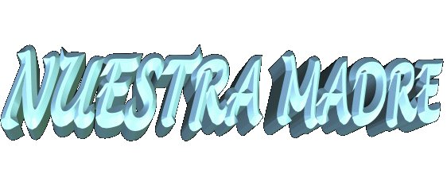
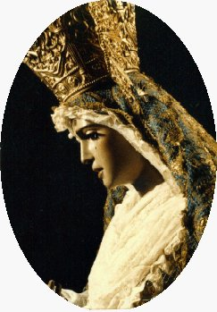
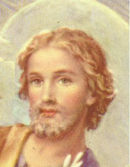

Tradición que los padres de MARIA de Nazar se
llamaban Joaqun y Ana.
Tradición que los padres de MARIA de Nazar se
llamaban Joaqun y Ana. 
 - INFANCIA
Y JUVENTUD - La
Sagrada Escritura no nos informa a nosotros, pero sabemos por la
Tradición que los padres de MARIA de Nazar se
llamaban Joaqun y Ana.
- INFANCIA
Y JUVENTUD - La
Sagrada Escritura no nos informa a nosotros, pero sabemos por la
Tradición que los padres de MARIA de Nazar se
llamaban Joaqun y Ana.
Desde 1584 la Iglesia confirma y conmemora el 26 de julio, la Fiesta de los "Abuelos de JESÚS".
NUESTRA SEÑORA naci pura y sin cualquier mancha, libre de los efectos del pecado original y exuberante de gracias por el Todo-poderoso, en razón del mrito de ser la MADRE DE DIOS. El hecho probablemente pasí en el ao 732 de la fundación de la ciudad de Roma, si nosotros aceptamos que JESÚS naci en el ao 748, segn los cÉlculos elaborados por especialistas, que también confirman la realidad que la VIRGEN MARIA tena 16 aos de edad cuando ELLA dio a luz al REDENTOR en la Gruta de Belàn.

El CUMPLEAOS DE MARIA
La Iglesia conmemora el cumpleaos de la Madre de Dios en el 8 de septiembre, aunque nuestra MADRE BENDITA, en SUS Apariciones en Medjugorje (desde Junio de 1981), inform a los videntes que ELLA naci el 5 de agosto.
Para
confirmar la fecha del cumpleaos de Maria, hay dos hechos que pasaron en el
mismo día y que por eso, colaboran eficazmente y nos guan admitir el 5 de
agosto a la fecha en verdad, considerando que "coincidencias" existen
y sin cualquier duda, ellos son los Trabajos de la Providencia Divina.
El
primer hecho pasí en agosto, ao 352, en la ciudad de Roma, con una nevada
milagrosa, en la Colina de Esquilino. Giovanni Patricio y su esposa soùaron que
la VIRGEN MARIA deseaba la construcción de una Iglesia en SU homenaje y
informaba "que el
lugar se marcara cubierto con nieve. En el sueo, NUESTRA SEÑORA
apareca con el MUCHACHO JESÚS en SUS brazos, y le pidi a la pareja que
llevase las noticias a Su Santidad. En la audiencia con el Papa Librio
(352-366), cuando la pareja estaba describiendo su sueo, el Pontfice se
sorprendi y admir, porque Él también había soùado con eso. Por esa razón
Él decidi verificar ese evento maravilloso.
Él con un ayudante fue a ver ese lugar! Para su gran sorpresa se cubri en nieve, pero era verano en Italia!
Fue el 5 de agosto de 352. El Papa empez a construir en la situación indicado
por la VIRGEN la BASóLICA LIBERIANA o IGLESIA DE SANTA MARIA DE LA NIEVE, y
también en esa fecha Él instituy la Celebración de NUESTRA SEÑORA DE LA
NIEVE, o de la VIRGEN BLANCA, en honor a la MADRE DE DIOS.
El
segundo hecho se pasí en el ao 431, cuando el Papa Celestino I (422-432)
decret el Concilio de Efesio, del 22 de junio al 31 de julio. En este Concilio
Ecumnico, se reconoci, y proclam oficialmente la DIVINA MATERNIDAD DE
MARIA. El 5 de agosto en Roma, Su Santidad celebr una Santa Misa y ley "en
ese día" el texto de la Dogma de la MATERNIDAD DIVINA DE NUESTRA SEÑORA.
En el Pontificado del Papa Sixto III (432-440), sucesor del Papa Celestino I, se construy en la misma situación indicada por la VIRGEN MARIA, en la Colina del Esquilino, en Roma, otro templo en honor a NUESTRA SEÑORA, con un sólido y muy bien calculo de las estructuras, con columnas inicas muy bonitas, y tres naves magnficas (es el espacio en la Iglesia de la entrada al santuario), incluso eso puede verse hasta hoy. La Iglesia vieja construida por el Papa Librio desapareci en el tiempo sin dejar cualquier vestigio. El nuevo templo se denomin BASóLICA DE SANTA MARIA MAGGIORE (Santa Maria, la más Grande), refirindose a la grandeza de SUS virtudes, y el inmenso poder de intercesin de la MADRE DE DIOS, NUESTRA SEÑORA y también llamada SANTA MARIA DE LA NIEVE. A lo largo de los siglos, la Basílica recibi muchas mejoras, pinturas admirables, el arte de oro en el forro y en los altares, suelos cermicos con los dibujos especiales, imgenes notables, y las esculturas artsticas que transformaron el Templo en una Basílica majestuosa, uno del más importante y más bonito Templo de MARIA en el mundo. Anualmente en el 5 de agosto se renuevan homenajes a NUESTRA SEÑORA, y ellos se multiplican en fiestas y celebraciones y recuerdan con entusiasmo y felicidad la Construcción de la Basílica, un presente digno y precioso de la humanidad en honor a NUESTRA SEÑORA, y como un signo de amor a ELLA en SU cumpleaos.

Su niez fue alegre y calma, igual como la de todos los otros niños rodeados por los afectos y atenciones de sus padres y miembros de la familia.
A los tres aos de edad en asistencia a los mandatos de la ley judía, ELLA fue llevada por sus padres al Templo en Jerusalàn para ser Presentada y Consagrada a DIOS. La ley mosaica (Lv 27,1-6) determinaba las obligaciones para los niños de ambos sexos, ellos deban ser Presentados, Consagrados y Ofrecidos a DIOS para toda la vida, y los padres para rescatarlos tenan que pagar un tributo en gramos de plata (ciclo de plata, moneda del tiempo).

Al completar 12 aos de edad, los muchachos y las muchachas de Israel entraban en un etapa con significado muy especial, porque de acuerdo con los hbitos y la ley, los muchachos empezaban a disfrutar de los derechos civiles y se tornaban ciudadanos judáos, y las muchachas eran consideradas "gedulah", legalmente autorizadas a se casar. Así, alcanzando esta edad, con la ayuda de la ley, los contratos matrimoniales eran elaborados.
Fue entonces, que al completar los doce aos de edad sucedi la primera manifestación resuelta de MARIA con relación al ideal de su vida. Sus padres hablaron con su hija sobre las formalidades de la ley y el gran inters de los jávenes por ELLA, situando el asunto sobre la posibilidad de un posible matrimonio. Nosotros podemos presumir que ELLA, con gran respeto y obediencia, hizo una argumentación directa, dicindoles que sus sentimientos habían crecido en dirección a un proyecto más sublime y maravilloso aunque el corazón de sus padres desease una "alianza matrimonial."
Con certeza ellos no entendieron las palabras de su hija, sin embargo, mismo sin entender la explicación, confiaron, conscientes de que ELLA siempre había demostrado un procedimiento maduro, con actitudes responsables y un exacto desempeo de sus obligaciones.
En verdad, por los sagrados
papiros MARIA encontr al CREADOR
y pronto se enamor de L, por la grandeza del
Amor Divino y la dimensin inconmensurable de la misericordia
del SEÑOR. Siempre estaba imaginando sobre las
manifestaciones Divinas que había ledo en los papiros y su amor creca
cada vez más, y tanto desarrollà que alcanz una grandeza
total, que ocupé su mente y todas las fibras de su corazón. ELLA
senta que era una necesidad de su alma agradar a DIOS
en cada momento, en todas ocupaciones, en los trabajos diarios y
hasta en las ocupaciones más pequeas y más modestas, buscando
hacerlas con inters, celo y perfección, porque entendía que
todos sus actos eran parte de su vida, hacindolas con más
atención y amor, indudablemente agradara mucho más al SANTO
PADRE. Y así ELLA procedi!...
Siempre estaba innovando, buscando descubrir nuevas maneras, un
gesto más significante que mostrara más delicadeza y
revelara la inmensidad de su amor para agradar mucho más al CREADOR.
Así, idealiz el cultivo de una virtud que la llevara a una
decisin seria y singular que fue la de mantener la virginidad,
como la mejor manera que encontr para agradar al PADRE
ETERNO.
más delicadeza y
revelara la inmensidad de su amor para agradar mucho más al CREADOR.
Así, idealiz el cultivo de una virtud que la llevara a una
decisin seria y singular que fue la de mantener la virginidad,
como la mejor manera que encontr para agradar al PADRE
ETERNO.
Pero en ese tiempo, los hbitos y la ley judía no prescriban la virginidad, simplemente no exista, porque en la ley cada mujer deba casarse tener sus niños y criar su descendencia. Entonces cristaliza el valor y expresin de lo mximo de la fuerza de voluntad de una mujer! ELLA imagin una más sagrada y genuina manera de agradar a DIOS y con determinación lo puso en prctica, tranquila y sin miedo. Tom un riesgo a ser mofada por su comunidad, ser considerada castigada por el SEÑOR, en virtud de no casarse y no tener niños, esto porque en la interpretación judía del Viejo Testamento, la mujer que no tena niños era considerada deshonrada, era un hecho ignominioso, incluso considerado un castigo Divino. (Gn 30,23)(1 Sm 1,5-8)
Sin embargo, MARIA permaneci fuerte e inflexible, firme en su resolución, en el ideal confidencial que sólo ELLA y el SANTO PADRE supieron.

SURGI JOSÉ
 - Era un carpintero y fabricante de varios
utensilios de madera: puertas, ventanas, coches, arados, etc. Tuvo más
coraje que los otros muchachos y se acerc a la familia
- Era un carpintero y fabricante de varios
utensilios de madera: puertas, ventanas, coches, arados, etc. Tuvo más
coraje que los otros muchachos y se acerc a la familia
En las oportunidades, José procuraba hablar con ELLA, sobre su trabajo, sus proyectos futuros, como también describiendo pasajes y los casos pintorescos que ocurrieron con su familia con el objetivo de hacerla sonrer y que participase de su vida.
MARIA siempre reservada, oùa sus narrativas con cortesóa, pero procuraba resistir a la prueba, aunque sus asuntos y atenciones la agradaban, sin embargo ELLA no lo estimulaba. Solamente permita que las cosas pasasen entre ellos como buenos vecinos en el pequeo pueblo de Nazar.
Mientras, a medida que las visitas aumentaban , el inters de José por MARIA creca y Él quedaba cada vez más lleno de entusiasmo. Estaba animado y no escondía sus reacciones. ELLA al contrario, continuaba con discreción visible, miraba sus insinuaciones, pero permaneca en silencio. No obstante, después de un tiempo, la comprensin entre los dos creci y se quedá mas fuerte, lo que llev MARIA a confiarle el gran secreto de su vida. Un día, cuando los dos jávenes hablaban sobre la existencia, MARIA le explic que mismo apreciando su compaa, sólo deseaba continuar siendo amiga, pues su ideal era otro. Le dijo que había dedicado toda su vida y virginidad a DIOS que era en la verdad su gran amor y por quien su corazón pulsaba apasionadamente con la mejor y más grande fuerza de su alma.
José estaba perplejo!... Él no crey que estaba oyendo esas palabras... Como todos los judáos, Él quera casarse, tener niños y construir su descendencia. Por esta razón, Él se admir ante esa revelación y Él no supo qu decir, vio sus sueos siendo demolidos por la fuerza de las palabras de la mujer que amaba, como castillos pequeos de arena en la playa destruidos por las olas del mar.
 Él pasí varios días
meditando en ellos, sobre su futuro y su vida sin ella. Una
reflexin larga Él persegua inducido por una equilibrada
razón, que llev a encontrar una solución que reconciliara
el propésito de la mujer de su sueos, con su deseo, de vivir
juntos para siempre, porque Él senta que ella era
irreemplazable en su existencia, por sus calidades excepcionales
y su belleza fascinante.
Él pasí varios días
meditando en ellos, sobre su futuro y su vida sin ella. Una
reflexin larga Él persegua inducido por una equilibrada
razón, que llev a encontrar una solución que reconciliara
el propésito de la mujer de su sueos, con su deseo, de vivir
juntos para siempre, porque Él senta que ella era
irreemplazable en su existencia, por sus calidades excepcionales
y su belleza fascinante.
Con el corazón inundado de ternura Él fue a encontrarse con MARIA... Fijá sus ojos en ELLA y con la convicción de haber hecho la mejor opción, propuso que también hara el voto de castidad perpetuo si ella se casara con Él, para juntos dedicaren a DIOS, la pureza de la virginidad así como su trabajo y la propia vida.
MARIA acept la propuesta de José. Era la solución ideal para los dos, porque casados ellos podran cultivar la castidad sin nadie percibirlo y así, realizaran el noble y singular objetivo para felicidad de los dos y demostración de un amor profundo e inmenso al CREADOR.
Siguiendo las leyes y el hbito judáo, el contrato matrimonial fue hecho, ellos eran esponsales, luego empezaran las preparaciones para la ceremonia de la Boda y la felicidad ya había ocupado una dimensin preciosa en el corazón de los dos.